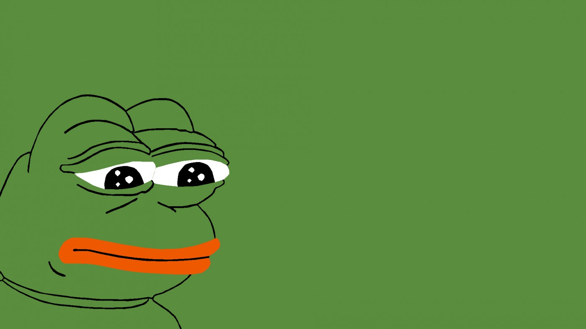

тут нема мемов
тут нема мемов
"Это тип Youtube"
Если нет иронии,то нет и мема
Cамый главный мем,это pepe the frog
Лягушка Пепе (англ. Pepe the Frog, /ˈpɛpeɪ/) — известный интернет-мем. Персонаж, представляющий из себя зелёную антропоморфную лягушку, впервые появился в комиксе Boy’s Club за авторством Мэтта Фьюри (Matt Furie).[2] Стал интернет-мемом в 2008 году, когда его популярность неуклонно возрастала в сообществах сайтов Myspace, Gaia Online и 4chan. К 2015 стал одним из наиболее популярных интернет-мемов на 4chan и Tumblr.[3] К 2016 году изображение Пепе было присвоено[4] спорным движением альтернативных правых как свой символ[5]. Антидиффамационная лига внесла некоторые изображения с лягушонком Пепе в свою базу символов ненависти в 2016 году, отметив при этом, что не все мемы с Пепе имеют расистскую направленность[6]. После этого создатель Пепе высказывал неприятие использования Пепе в качестве символа ненависти[7]. Оригинальный мем со временем развился в несколько вариантов, например, Sad Frog (с англ. — «печальная лягушка»), Smug Frog (с англ. — «самодовольная лягушка»), Feels Frog (с англ. — «чувствительная лягушка»), лягушка «You will never…»[8].